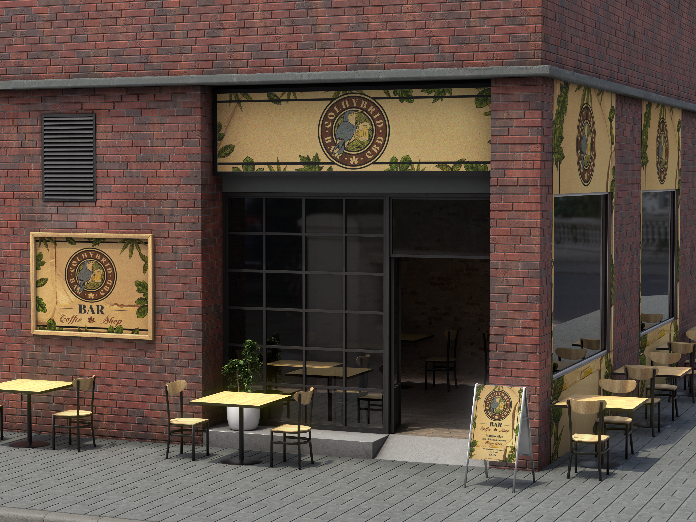
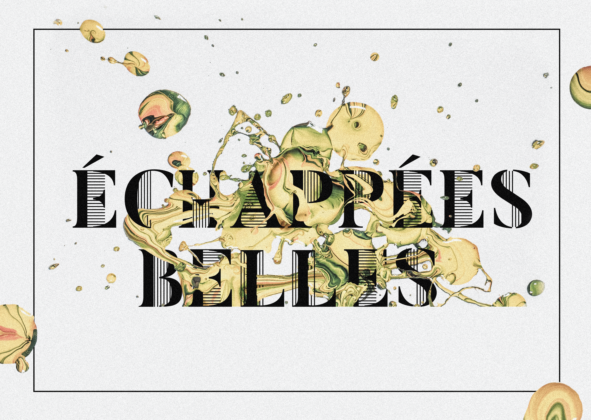
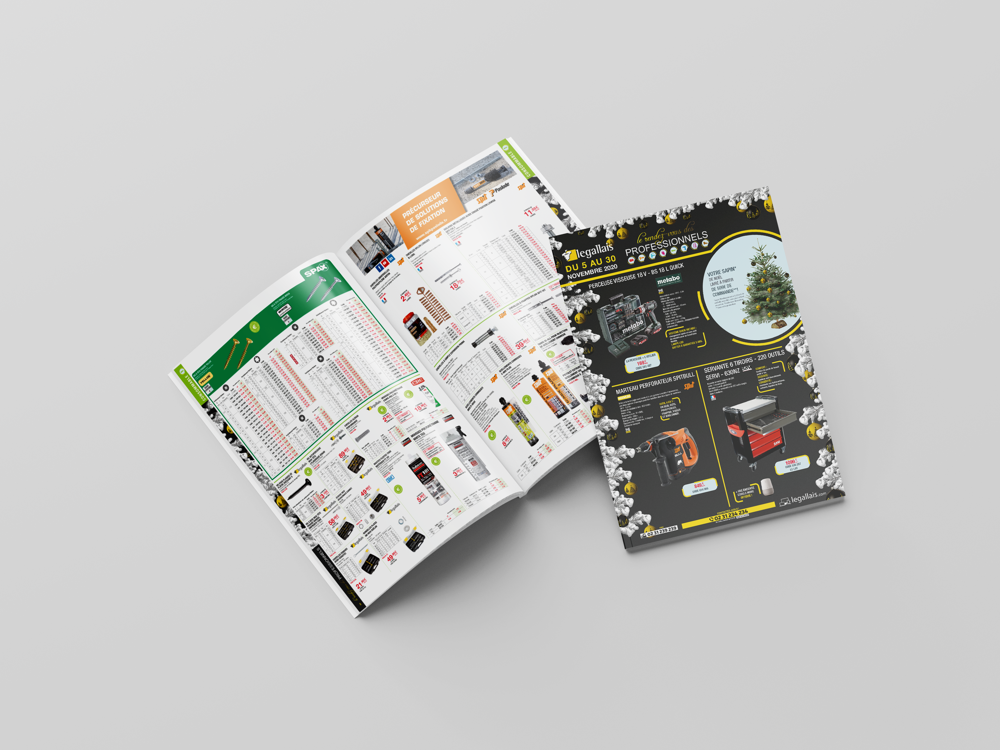

Identité visuelle
Affiches Graphique
Création d'identités visuelles et développement d'univers graphique à travers des affiches de festivals ou autre.
Portfolio
Une sélection de mes projets en identité visuelle, graphisme et mise en page. Cliquez sur un projet pour en voir le détail.
Identité visuelle
Création d'identités visuelles et développement d'univers graphique à travers des affiches de festivals ou autre.

Identité visuelle
Création d'une identité visuelle pour un concept fictif, de la conception du logo à l'univers graphique et aux supports de communication.

Identité visuelle
Création d'une identité visuelle et développement d'un univers graphique cohérent et complet autour d'un évènement.

Mise en page éditoriale
Création d'un catalogue fictif de produits dans le but de travailler la mise en page.

Identité visuelle - Mise en page
Création d'une identité visuelle et mise en page d'un magazine.

Identité visuelle
Création d'une identité visuelle et développement d'un univers graphique cohérent par rapport aux travaux d'une artiste, Niki de Saint Phalle.